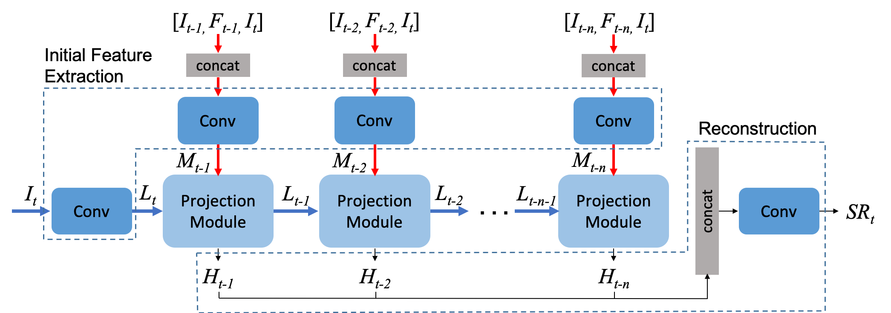
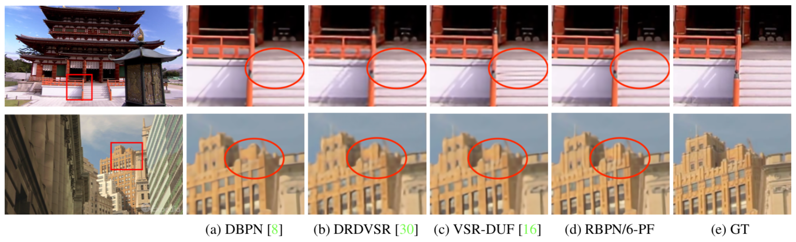
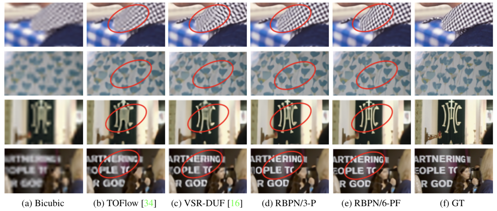

Recurrent Back-Projection Network For Video Super-Resolution
Muhammad Haris,
Greg Shakhnarovich,
Norimichi Ukita

Abstract
We proposed a novel architecture for the problem of video super-resolution. We integrate spatial and temporal contexts from continuous video frames using a recurrent encoder-decoder module, that fuses multi-frame information with the more traditional, single frame super-resolution path for the target frame. In contrast to most prior work where frames are pooled together by stacking or warping, our model, the Recurrent Back-Projection Network (RBPN) treats each context frame as a separate source of information. These sources are combined in an iterative refinement framework inspired by the idea of back-projection in multiple-image super-resolution. This is aided by explicitly representing estimated inter-frame motion with respect to the target, rather than explicitly aligning frames. We propose a new video super-resolution benchmark, allowing evaluation at a larger scale and considering videos in different motion regimes. Experimental results demonstrate that our RBPN is superior to existing methods on several datasets.
Manuscript
- CVPR2019 [pdf] [arXiv]
- Supplementary Material
Code
Results on 4x
SPMCS

Vimeo90k

Citation
Muhammad Haris, Greg Shakhnarovich, and Norimichi Ukita, "Recurrent Back-Projection Network For Video Super-Resolution", Proc. of IEEE Conference on Computer Vision and Pattern Recognition (CVPR), 2019.